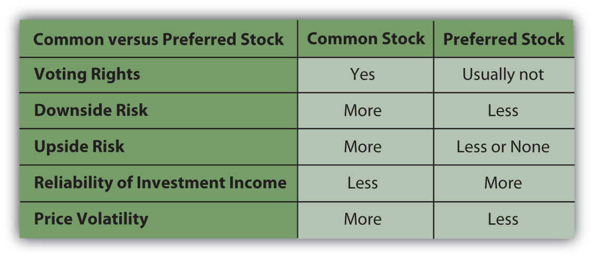

Resources have costs, so a company needs money, or capital, which is also a resource. To get that start-up capital, the company could borrow or it could offer a share of ownership, or equity, to those who chip in capital.
If the costs of debt (interest payments) are affordable, the company may choose to borrow, which limits the company’s commitment to its capital contributor. When the loan matures and is paid off, the relationship is over.
If the costs of debt are too high, however, or the company is unable to borrow, it seeks equity investors willing to contribute capital in exchange for an unspecified share of the company’s profits at some time in the future. In exchange for taking the risk of no exact return on their investment, equity investors get a say in how the company is run.
Stock represents those shares in the company’s future and the right to a say in how the company is run. The original owners—the inventor(s) and entrepreneur(s)—choose equity investors who share their ideals and vision for the company. Usually, the first equity investors are friends, family, or colleagues, allowing the original owners freedom of management. At that point, the corporation is privately held, and the company’s stock may be traded privately between owners. There may be restrictions on selling the stock, often the case for a family business, so that control stays within the family.
If successful, however, eventually the company needs more capital to grow and remain competitive. If debt is not desirable, then the company issues more equity, or stock, to raise capital. The company may seek out an angel investorAn individual or group providing equity financing; usually a wealthy individual., venture capitalPrivate equity provided to facilitate excessive growth before the initial public offering of shares. firm, or private equityEquity not traded in a public market or exchange. firm. Such investors finance companies in the early stages in exchange for a large ownership and management stake in the company. Their strategy is to buy a significant stake when the company is still “private” and then realize a large gain, typically when the company goes public. The company also may seek a buyer, perhaps a competitive or complementary business.
Alternatively, the company may choose to go publicTo raise capital by issuing equity shares through a public exchange., to sell shares of ownership to investors in the public markets. Theoretically, this means sharing control with random strangers because anyone can purchase shares traded in the stock market. It may even mean losing control of the company. Founders can be fired, as Steve Jobs was from Apple in 1985 (although he returned as CEO in 1996).
Going public requires a profound shift in the corporate structure and management. Once a company is publicly traded, it falls under the regulatory scrutiny of federal and state governments, and must regularly file financial reports and analysis. It must broaden participation on the board of directors and allow more oversight of management. Companies go public to raise large amounts of capital to expand products, operations, markets, or to improve or create competitive advantages. To raise public equity capital, companies need to sell stock, and to sell stock they need a market. That’s where the stock markets come in.
The private corporation’s board of directors, shareholders elected by the shareholders, must authorize the number of shares that can be issued. Since issuing shares means opening up the company to more owners, or sharing it more, only the existing owners have the authority to do so. Usually, it authorizes more shares than it intends to issue, so it has the option of issuing more as need be.
Those authorized sharesShares of common or preferred stock that have been authorized for issuance by a corporation’s board of directors. are then issued through an initial public offering (IPO)A company’s first issuance of stock for trade in the public markets. Companies issue stock publicly to attract more investors and thus more capital for the company. When a company has its IPO is it said to “go public.”. At that point the company goes public. The IPO is a primary marketThe market in which the initial issuance or initial public offering of a stock occurs. transaction, which occurs when the stock is initially sold and the proceeds go to the company issuing the stock. After that, the company is publicly traded; its stock is outstanding, or publicly available. Then, whenever the stock changes hands, it is a secondary marketA market in which outstanding shares are traded. transaction. The owner of the stock may sell shares and realize the proceeds. When most people think of “the stock market,” they are thinking of the secondary markets.
The existence of secondary markets makes the stock a liquid or tradable asset, which reduces its risk for both the issuing company and the investor buying it. The investor is giving up capital in exchange for a share of the company’s profit, with the risk that there will be no profit or not enough to compensate for the opportunity cost of sacrificing the capital. The secondary markets reduce that risk to the shareholder because the stock can be resold, allowing the shareholder to recover at least some of the invested capital and to make new choices with it.
Meanwhile, the company issuing the stock must pay the investor for assuming some of its risk. The less that risk is, because of the liquidity provided by the secondary markets, the less the company has to pay. The secondary markets decrease the company’s cost of equity capital.
A company hires an investment bank to manage its initial public offering of stock. For efficiency, the bank usually sells the IPO stock to institutional investors. Usually, the original owners of the corporation keep large amounts of stock as well.
What does this mean for individual investors? Some investors believe that after an initial public offering of stock, the share price will rise because the investment bank will have initially underpriced the stock in order to sell it. This is not always the case, however. Share price is typically more volatile after an initial public offering than it is after the shares have been outstanding for a while. The longer the company has been public, the more information is known about the company, and the more predictable its earnings are and thus share price.M. B. Lowery, M. S. Officer, and G. W. Schwert, “The Variability of IPO Initial Returns,” Journal of Finance, http://schwert.ssb.rochester.edu/ipovolatility.htm (accessed June 9, 2009).
When a company goes public, it may issue a relatively small number of shares. Its market capitalizationThe total market value of a corporation’s capital.—the total dollar value of its outstanding shares—may therefore be small. The number of individual shareholders, mostly institutional investors and the original owners, also may be small. As a result, the shares may be “thinly traded,” traded infrequently or in small amounts.
Thinly traded shares may add to the volatility of the share price. One large shareholder deciding to sell could cause a decrease in the stock price, for example, whereas for a company with many shares and shareholders, the actions of any one shareholder would not be significant. As always, diversification—in this case of shareholders—decreases risk. Thinly traded shares are less liquid and more risky than shares that trade more frequently.
A company may issue common stockEquity shares representing the residual claim on the company’s value. or preferred stockEquity shares that represent a superior claim over common shares but typically do not confer voting rights.. Common stock is more prevalent. All companies issue common stock, whereas not all issue preferred stock. The differences between common and preferred have to do with the investor’s voting rights, risk, and dividends.
Common stock allows each shareholder voting rights—one vote for each share owned. The more shares you own, the more you can influence the company’s management. Shareholders vote for the company’s directors, who provide policy guidance for and hire the management team that directly operates the corporation. After several corporate scandals in the early twenty-first century, some shareholders have become more active in their voting role.
Common stockholders assume the most risk of any corporate investor. If the company encounters financial distress, its first responsibility is to satisfy creditors, then the preferred shareholders, and then the common shareholders. Thus, common stocks provide only residual claims on the value of the company. In the event of bankruptcy, in other words, common shareholders get only the residue—whatever is left after all other claimants have been compensated.
Common shareholders share the company’s profit after interest has been paid to creditors and a specified share of the profit has been paid to preferred shareholders. Common shareholders may receive all or part of the profit in cash—the dividend. The company is under no obligation to pay common stock dividends, however. The management may decide that the profit is better used to expand the company, to invest in new products or technologies, or to grow by acquiring a competitor. As a result, the company may pay a cash dividend only in certain years or not at all.
Shareholders investing in preferred stock, on the other hand, give up voting rights but get less risk and more dividends. Preferred stock typically does not convey voting rights to the shareholder. It is often distributed to the “friends and family” of the original founders when the company goes public, allowing them to share in the company’s profits without having a say in its management. As noted above, preferred shareholders have a superior claim on the company’s assets in the event of bankruptcy. They get their original investment back before common shareholders but after creditors.
Preferred dividends are more of an obligation than common dividends. Most preferred shares are issued with a fixed dividend as cumulative preferred sharesPreferred shares that obligate the company to pay dividends to preferred shareholders before paying any others.. This means that if the company does not create enough profit to pay its preferred dividends, those dividends ultimately must be paid before any common stock dividend.
For the individual investor, preferred stock may have two additional advantages over common stock:
As the company goes through its ups and downs, the preferred stock price will fluctuate less than the common stock price. If the company does poorly, preferred stockholders are more likely to be able to recoup more of their original investment than common shareholders because of their superior claim. If the company does well, however, preferred stockholders are less likely to share more in its success because their dividend is fixed. Preferred shareholders thus are exposed to less risk, protected by their superior claim and fixed dividend. The preferred stock price reflects less of the company’s volatility.
Because the preferred dividend is more of an obligation than the common dividend, it provides more predictable dividend income for shareholders. This makes the preferred stock less risky and attractive to an investor looking for less volatility and more regular dividend income.
Figure 15.3 "Stock Comparisons" summarizes the differences between common stock and preferred stock.
Figure 15.3 Stock Comparisons
As an investment choice, preferred stock is more comparable to bonds than to common stock. Bonds also offer less volatility and more reliable income than common stock (see Chapter 16 "Owning Bonds"). If there is a difference in the tax rate between dividend income (from preferred stock) and interest income (from bonds), you may find a tax advantage to investing in preferred stock instead of bonds.
Corporations often issue and trade their stocks on exchanges or in markets outside their home country, especially if the foreign market has more liquidity and will attract more buyers. Many foreign corporations issue and trade stock on the New York Stock Exchange (NYSE) or on the National Association of Securities Dealers Automated Quotations (NASDAQ), for example.
Investing in foreign shares is complicated by the fact that stock represents ownership, a legal as well as an economic idea, and because foreign companies operate in foreign currencies. To get around those issues and make foreign shares more tradable, the American Depository Receipt (ADR)An asset representing equity shares in a foreign corporation trading in U.S. markets. was created in 1927. U.S. banks buy large amounts of shares in a foreign company and then sell ADRs (each representing a specified number of those shares) to U.S. investors. Individual shares of the stock are called American Depository Shares, or ADSs.
The ADR is usually listed on a major U.S. stock exchange, such as the New York Stock Exchange, or is quoted on the NASDAQ. One ADR can represent more or less than one share of the foreign stock, depending on its price and the currency exchange rate, so that the bank issuing the ADR can “price” it according to the norms of U.S. stock markets.
ADRs lower transaction costs for U.S. investors investing in foreign corporations. Because they are denominated in U.S. dollars, they lower exchange rate or currency risk for U.S. investors. They also lower your usual risks with investing overseas, such as lack of information and too much or too little regulatory oversight.
In return for marketing their shares in the lucrative U.S. market, foreign companies must provide U.S. banks with detailed financial reports. This puts available foreign corporate information on par with that of U.S. companies. Because they are issued and sold in the United States on U.S. exchanges, ADRs fall under the regulatory control of the Securities and Exchange Commission (SEC) and other federal and state regulatory agencies, which also lowers your risk.
Equity securities may be common or preferred stock, differing by